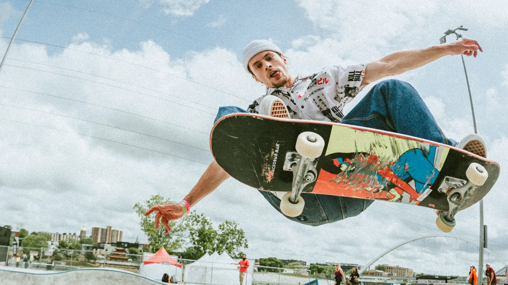

Что такое скейтбординг?
Скейтбординг – это вид спорта и активного отдыха, который заключается в катании и исполнении трюков на скейтборде, или роликовой доске.
Скейтер стоит на доске, которая состоит из деревянной деки, подвески и колес, отталкивается одной ногой от земли и использует инерцию движения для того, чтобы выполнять трюки и прыжки.
Кто, когда и где изобрел скейтбординг?
Скейтбординг появился в 50-х годах XX века в Калифорнии. Когда на море не было волн, серферы от скуки приделали колеса от роликов к своим доскам.
Невозможно сказать, кто именно изобрел скейтбординг. Но авторство скейтборда в его современном виде принадлежит пляжному спасателю Ларри Стивенсону.
 В 1963 году он основал компанию Makaha, которая значительно усовершенствовала роликовые доски.
Он укоротил деку, взяв пример с серфинговых шортбордов. И добавил киктейл, то есть загиб на хвосте доски. Без него немыслимо большинство современных трюков.
В 1963 году он основал компанию Makaha, которая значительно усовершенствовала роликовые доски.
Он укоротил деку, взяв пример с серфинговых шортбордов. И добавил киктейл, то есть загиб на хвосте доски. Без него немыслимо большинство современных трюков.
Происхождение скейтбординга столь же неоднозначно, как и происхождение нашей Вселенной. Существует множество мнений самопровозглашенных скейт-историков о том, как, когда и где появились первые скейтборды. Считается, что они были созданы в Соединенных Штатах. Изначально они представляли собой деревянные ящики с прикрепленными к нижней части роликовыми коньками. Первые модели скейтов были оснащены ручками-рулями, как у современных мопедов. Со временем ящики заменили на деревянные доски, а рули убрали вовсе: это позволило добиться ощущения, схожего с катанием на серфе. Эти коробки-мопеды были известны еще в конце XIX века, однако лишь к 1950-м годам деревянные поддоны с глиняными колесами приобрели популярность для езды по склонам Южной Калифорнии. До начала массового производства скейтбордов в 1959 году единственным способом начать кататься оставалось создание собственной доски своими руками. Отголосок этих самодельных скейтбордов виден и сегодня: скейтбординг неразрывно связан с идеей «сделай сам». Красота и искренность становления скейтбординга заключаются в том, что он зародился не по инициативе рынка, а благодаря непреодолимому желанию самовыражения. Чтобы понять эту простую, но глубокую истину, давайте немного изучим вопрос «Что такое скейтбординг» и, в конечном счете, подумаем над тем, что значит быть скейтбордистом.